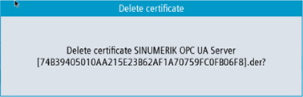
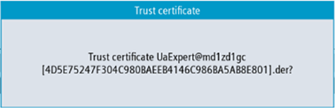

① | The rejected certificates are listed in the upper part of the screen. You can select a certificate using the arrow keys (cursor up/ cursor down). |
② | You can delete the selected certificate. |
③ | You can trust the selected certificate. |
④ | You can leave the OPC UA dialogs. |
⑤ | The certificate details are shown in the lower part of the screen. To set the focus on the lower part of the screen the softkey "next window" on the keyboard is used. |
Rejected Certificate
To manually delete a client certificate, select the certificate in the rejected list and press the softkey "Delete".
A pop-up screen will appear asking you for confirmation of deletion:
Delete rejected certificate
Pressing the softkey "Cancel" will do no action and return to the previous dialog.
Pressing the softkey "Ok" will delete the selected certificate.
If the setting "Accept certificates automatically" is deactivated, certificates automatically transferred by a client with the first connection attempt will be treated as untrusted and need to be trusted manually before the connection can be established. In this case, the server will report an error (BadSecurityChecksFailed) on initial connection attempt.
To manually trust a client certificate, select the certificate in the rejected list and press the softkey "Trust".
A pop-up screen will appear asking for confirmation of trusting the certificate.
Trust certificate
Pressing the softkey "Cancel" will return to the "Rejected" dialog.
Pressing the softkey "Ok" will trust the certificate and move it to the trusted folder.